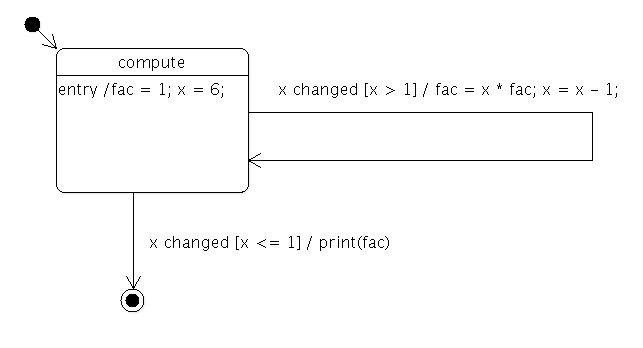

Factorial States Example
The Factorial States example shows how to use The State Machine Framework to calculate the factorial of an integer.
The statechart for calculating the factorial looks as follows:

In other words, the state machine calculates the factorial of 6 and prints the result.
class Factorial : public QObject { Q_OBJECT Q_PROPERTY(int x READ x WRITE setX) Q_PROPERTY(int fac READ fac WRITE setFac) public: Factorial(QObject *parent = 0) : QObject(parent), m_x(-1), m_fac(1) { } int x() const { return m_x; } void setX(int x) { if (x == m_x) return; m_x = x; emit xChanged(x); } int fac() const { return m_fac; } void setFac(int fac) { m_fac = fac; } Q_SIGNALS: void xChanged(int value); private: int m_x; int m_fac; };
The Factorial class is used to hold the data of the computation, x and fac. It also provides a signal that's emitted whenever the value of x changes.
class FactorialLoopTransition : public QSignalTransition { public: FactorialLoopTransition(Factorial *fact) : QSignalTransition(fact, &Factorial::xChanged), m_fact(fact) {} bool eventTest(QEvent *e) override { if (!QSignalTransition::eventTest(e)) return false; QStateMachine::SignalEvent *se = static_cast<QStateMachine::SignalEvent*>(e); return se->arguments().at(0).toInt() > 1; } void onTransition(QEvent *e) override { QStateMachine::SignalEvent *se = static_cast<QStateMachine::SignalEvent*>(e); int x = se->arguments().at(0).toInt(); int fac = m_fact->property("fac").toInt(); m_fact->setProperty("fac", x * fac); m_fact->setProperty("x", x - 1); } private: Factorial *m_fact; };
The FactorialLoopTransition class implements the guard (x > 1) and calculations (fac = x * fac; x = x - 1) of the factorial loop.
class FactorialDoneTransition : public QSignalTransition { public: FactorialDoneTransition(Factorial *fact) : QSignalTransition(fact, &Factorial::xChanged), m_fact(fact) {} bool eventTest(QEvent *e) override { if (!QSignalTransition::eventTest(e)) return false; QStateMachine::SignalEvent *se = static_cast<QStateMachine::SignalEvent*>(e); return se->arguments().at(0).toInt() <= 1; } void onTransition(QEvent *) override { fprintf(stdout, "%d\n", m_fact->property("fac").toInt()); } private: Factorial *m_fact; };
The FactorialDoneTransition class implements the guard (x <= 1) that terminates the factorial computation. It also prints the final result to standard output.
int main(int argc, char **argv) { QCoreApplication app(argc, argv); Factorial factorial; QStateMachine machine;
The application's main() function first creates the application object, a Factorial object and a state machine.
QState *compute = new QState(&machine);
compute->assignProperty(&factorial, "fac", 1);
compute->assignProperty(&factorial, "x", 6);
compute->addTransition(new FactorialLoopTransition(&factorial));
The compute state is created, and the initial values of x and fac are defined. A FactorialLoopTransition object is created and added to the state.
QFinalState *done = new QFinalState(&machine);
FactorialDoneTransition *doneTransition = new FactorialDoneTransition(&factorial);
doneTransition->setTargetState(done);
compute->addTransition(doneTransition);
A final state, done, is created, and a FactorialDoneTransition object is created with done as its target state. The transition is then added to the compute state.
machine.setInitialState(compute);
QObject::connect(&machine, &QStateMachine::finished, &app, QCoreApplication::quit);
machine.start();
return app.exec();
}
The machine's initial state is set to be the compute state. We connect the QStateMachine::finished() signal to the QCoreApplication::quit() slot, so the application will quit when the state machine's work is done. Finally, the state machine is started, and the application's event loop is entered.